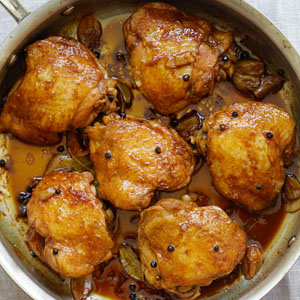
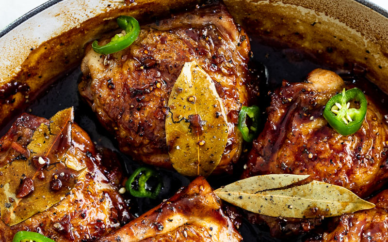

Local Dishes Recipe 3:
Chicken Adobo
- Dish Description:
- Chicken Adobo is a type of Filipino chicken stew. Chicken pieces are marinated in soy sauce and spices, pan-fried, and stewed until tender. The dish gained popularity because of its delicious taste and ease in preparation. It tastes just right and the cooking time is around 30 minutes. The best way to eat chicken adobo is to have it with warm white rice. The combo is simply known as Chicken Adobo and Rice. Pouring some of the adobo sauce over rice before eating is a good idea because it makes it more flavorful.

Ingredients:
- 2 lbs chicken cut into serving pieces
- 3 pieces dried bay leaves
- 8 tablespoons soy sauce
- 4 tablespoons white vinegar
- 5 cloves garlic crushed
- 1 1/2 cups water
- 3 tablespoons cooking oil
- 1 teaspoon sugar
- 1/4 teaspoon salt optional
- 1 teaspoon whole peppercorn
Directions:
- Combine chicken, soy sauce, and garlic in a large bowl. Mix well. Marinate the chicken for at least 1 hour. Note: the longer the time, the better.
- Heat a cooking pot. Pour cooking oil.
- When the oil is hot enough, pan-fry the marinated chicken for 2 minutes per side.
- Pour-in the remaining marinade, including garlic. Add water. Bring to a boil.
- Add dried bay leaves and whole peppercorn. Simmer for 30 minutes or until the chicken gets tender.
- Add vinegar. Stir and cook for 10 minutes.
- Put-in the sugar, and salt. Stir and turn the heat off.Serve hot. Share and Enjoy!